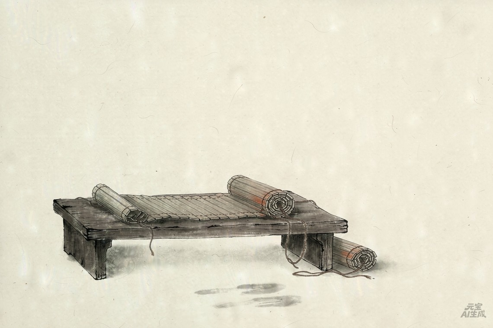
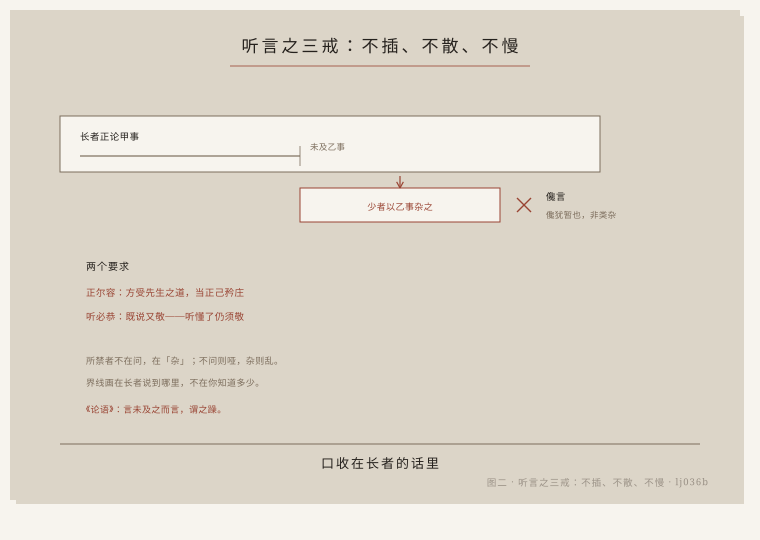

曲礼上 · 一·三十八 · 第 36 课
这一节讲在长者说话时怎么听、怎么答：长者没说到的事，不要插话；端正你的仪容；听的时候务必恭敬。
说什么事：长者不及，毋儳言；正尔容，听必恭。
落在哪一层：教。上节讲坐，这节讲坐在长者面前时口与容。
为何编在此位：坐定了才有听；先有位，后有言。
【经】長者不及，毋儳言。正爾容，聽必恭。
不及 疏：「及谓所及之事也。」——长者正说之事。
儳言 郑注：「儳犹暂也，非类杂。」疏：「长者正论甲事，未及乙事，少者不得辄以乙事杂甲事，暂然杂错师长之说。」
正尔容 疏：「正谓矜庄也。方受先生之道，当正己矜庄也。颜、容通语耳。」
听必恭 郑注：「听先生之言，既说又敬。」疏：「听师长之说，宜恭敬也。」
长者没有说到的事，不要插话。端正你的仪容，听的时候务必恭敬。
三句说一件事：把口与身都收在长者的话里。不许岔，不许散，不许慢。
第一层 「不及」是界线，不是话题 疏解得最准：「长者正论甲事，未及乙事，少者不得辄以乙事杂甲事。」——界线画在长者「说到哪里」，不在「你知道多少」。你恰有一件更精彩的乙事，也不许此刻端上来。
第二层 「儳」是「暂」，是插一下就走 郑训「儳」为暂，又补「非类杂」。插话的特点正是短：一句、半句，把话头挪开，然后回到原处。礼所禁者，就是这半句。
第三层 「正尔容」：受道之时身体要立起来 疏「方受先生之道，当正己矜庄」。听人说话是受，受则身正；身一斜，话就进不去。
第四层 「听必恭」：郑注「既说又敬」 「说」读作悦：听懂了、听高兴了，仍要敬。这一条最难：人一高兴，便会接话、便会身子前倾。礼在此加一道闸。
与今日何干 今日交谈最大的病是「抢」：抢话题、抢结论、抢着懂。此节只说三件事：不插、不散、不慢。
| 左 | 右 |
|---|---|
| 长者不及，毋儳言 | 儳犹暂也，非类杂 |
| 长者论甲未及乙 | 不得以乙事杂甲事 |
| 正尔容 | 矜庄以受先生之道 |
| 听必恭 | 既说又敬 |

